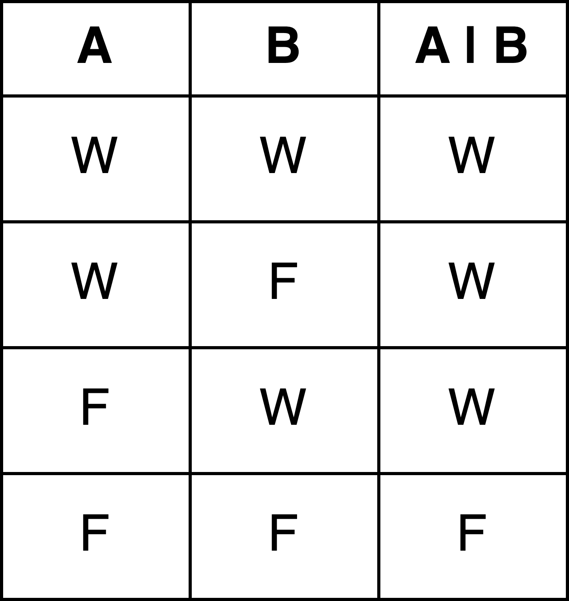
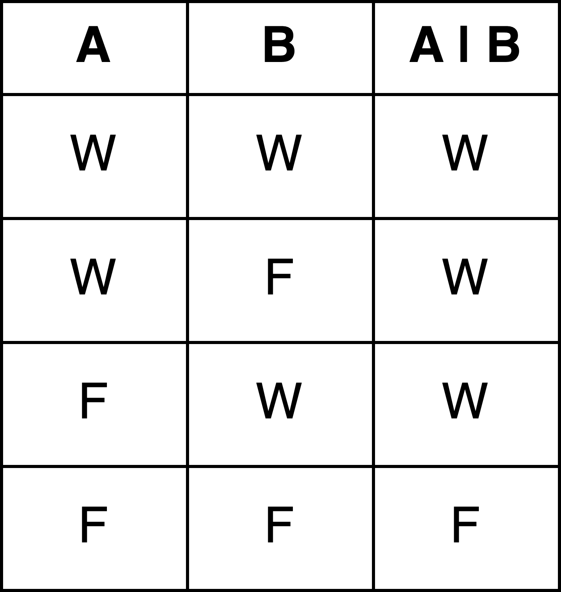

1 R Basics I: Datentypen, Variablen und Operatoren
1.1 Grundlegende Begriffe
| Begriff | Englische Entsprechung | Definition (im R-Kontext) |
|---|---|---|
| Objekt | Object | Alles: Funktionen, Variablen, Datenstrukturen,.. |
| Anweisung | Statement | Syntaktische Einheit, die Aktionen beschreibt, die von einem Computer ausgeführt werden können. Wenn die Anweisung ausgeführt wird, wird die Aktion veranlasst und der Zustand des Speichers wird geändert. |
| Zuweisung | Assignment | Besondere Art von Anweisung, bei der einer Variable ein bestimmter Wert zugeordnet wird. Dabei wird ein Name festgelegt, der fortan für diesen Wert und für den Speicherplatz, in dem der Wert gespeichert wird, steht. |
| Ausdruck | Expression | Syntaktische Einheit, die zu einem Wert evaluiert (ausgewertet) werden kann. Ein Ausdruck ist immer Teil einer Anweisung. Ausdrücke stehen auf der rechten Seite von Zuweisungen: x <- Ausdruck. Ausdrücke haben immer einen Typ, der dem Datentyp des Werts entspricht, zu dem sie evaluiert werden, z.B. 3 == 4 ist ein Ausdruck vom Typ boolean. |
| Aussage | Proposition | In der Aussagenlogik ein sprachliches Gebilde, von dem es sinnvoll ist zu sagen, dass es entweder wahr oder falsch ist (Aristoteles). Im R-Kontext ein Ausdruck, der entweder zu TRUE oder zu FALSE evaluiert werden kann. |
| Auswerten | Evaluate | Der Computer liest einen Ausdruck und wertet diesen aus: Er berechnet etwas und liefert einen Wert. |
| Ausführen | Execute | Der Computer liest eine Anweisung und führt diese aus: Er macht etwas und ändert den Zustand des Speichers. |
| Ausgeben | Output/Print | Das Ergebnis einer Berechnung oder die Ausgabe einer Funktion wird auf der Konsole angezeigt. |
Die Definitionen sind angelehnt an Venables et al. (2023), Wickham (2019) und Reussner (2016).
1.2 Style Guide
Anders als beispielsweise in Python gibt es in R keinen allgemein anerkannten “Coding Style”, also keine über die Syntaxregeln hinausgehenden Vorgaben, wie Code am besten geschrieben wird. Es gibt allerdings einige breit akzeptierte Empfehlungen. Wir richten uns in diesem Kurs nach dem “Tidyverse Style Guide” von Hadley Wickham: https://style.tidyverse.org/.
1.3 Kommentare
Um den eigenen Code für andere verständlicher zu gestalten und sich selbst an seinen Code zu erinnern, sollte man diesen immer gut kommentieren.
1.4 Datentypen
In R ist ganz grundsätzlich alles ein Objekt: ein Wort, eine Zahl, ein Vektor, eine Liste, eine Variable und sogar Funktionen (lernen wir alles später), all das wird in R als Objekt behandelt.
Wie auch in der realen Welt haben verschiedene Objekte verschiedene Eigenschaften und sie können für verschiedene Zwecke und auf verschiedene Weise verwendet werden. Das hängt davon ab, um was für eine Art Objekt es sich handelt: ein Objekt vom Typ “Lampe” kann man anschalten und ausschalten, mathematische Objekte wie Zahlen kann man addieren und dividieren, ein Auto kann fahren, parken oder tanken. In R haben wir es natürlich nicht mit realen Objekten zu tun, sondern eigentlich mit “Datenobjekten”.
In R gibt es vier grundlegende Datentypen (und zwei, die wir jetzt erstmal ignorieren):
- character (auch “character string”): Zeichenkette
- integer: Ganzzahl
- numeric (auch “double”): Gleitkommazahl
- logical (auch “boolean”): Boolescher Wahrheitswert
Character ist kurz für “character string”; in anderen Programmiersprachen heißt dieser Datentyp daher oft “string”. In R wird jeder Ausdruck, der von Anführungszeichen umgeben ist, als Zeichenkette (character) interpretiert. Double ist, ähnlich wie bei character und string, der allgemeine Name für den Datentyp numeric. Der Default-Datentyp für Zahlen ist in R numeric. Um eine Zahl als Integer zu definieren, kann ein großes L an die Zahl angefügt werden. Logical steht für die beiden Werte TRUE und FALSE. Sie werden auch als Boolesche Wahrheitswerte bezeichnet (-> kennt ihr ggf. aus der Aussagenlogik). Für “Datentyp” kann man auch kurz “Typ” sagen.
Ein paar Beispiele:
2
2L
345682389
4.6 # Punkt statt Komma!
"4.6"
TRUE
FALSE
"Hello World" # Anführungszeichen!
"Ein ganz langer Satz! Mit mehreren Satzzeichen. Und einer Zahl: 34."
" "Den Datentyp eines Objekts könnt ihr z.B. mit der Funktion typeof() abfragen. Wenn ihr jede Zeile nacheinander in ein R Skript kopiert und ausführt, wird auf der Konsole (Fenster Console im RStudio) der Wert ausgegeben, der hier von #> angeführt wird.
#> [1] "double"#> [1] "integer"#> [1] "double"#> [1] "character"#> [1] "logical"Verständnisfragen:
- Ist ” ” auch ein Zeichen?
- Haben 4.6 und “4.6” denselben Datentyp?
- Welchen Datentyp hat der Satz “Ein ganz langer Satz! …”?
Style Tip:
Für Zeichenketten können einfache oder doppelte Anführungszeichen verwendet werden. Wickham empfiehlt, für Zeichenketten doppelte Anführungszeichen zu verwenden, außer, wenn diese selbst Anführungszeichen beinhalten, hier werden beide Anführungszeichen wie folgt kombiniert: ‘Text mit “Anführungszeichen”’.
1.5 Operatoren
Je nachdem, welchen Datentyp ein oder mehrere Objekte in R haben, können diese Objekte auf verschiedene Weise mithilfe von Operatoren manipuliert werden.
- Arithmetische Operatoren sind aus der Schulmathematik bekannt.
Es handelt sich dabei um Operatoren wie
-,+,*,/sowie%%und%/%. Beachtet, dass der Divisionsoperator/nur für numerics definiert ist. Für die Division zweier integers wird ein spezieller Divisionsoperator,%/%, verwendet.%%ist der modulo Operator, damit kann bei einer Division der Rest berechnet werden.^oder**wird zum Exponieren verwendet.
#> [1] 9#> [1] 2#> [1] 18.9#> [1] 0#> [1] 100#> [1] 100Verständnisfragen:
- Was passiert, wenn wir
"Hallo" + "Welt"ausführen? - Welche Datentypen in R erlauben arithmetische Operationen?
Logische Operatoren ermöglichen es, Werte zu vergleichen und die Richtigkeit einer logischen Aussage zu überpüfen. Die Vergleichsoperatoren
<,>,<=,>=sind allgemein bekannt. Außerdem sind folgende Operatoren wichtig:Operator Bedeutung == genau gleich != ungleich !x nicht x x ⎮ y x oder y x & y x und y x ⎮⎮ y x oder y in Kontrollstrukturen x && y x und y Kontrollstrukturen
Beispiele:
#> [1] FALSE#> [1] TRUE#> [1] TRUE#> [1] TRUE#> [1] TRUE#> [1] TRUE#> [1] FALSEVerständnisfragen:
- Warum wird der Ausdruck
3 == 3 & "c" == "c"zuTRUEevaluiert? - Warum wird auch der Ausdruck
3 == 3 | "c" == "a"zuTRUEevaluiert? - Was passiert im letzten Beispiel?
Der Wahrheitswert, zu dem ein Ausdruck mit einem logischen Operator in R evaluiert wird, lässt sich aus einer sogenannten Wahrheitstabelle ablesen. Für zwei Ausdrücke A und B und die logischen Operatoren & und | lassen sich die folgenden Kombinationen als Wahrheitstabelle darstellen:
 

Verständnisfragen:
A sei der Ausdruck 3 == 3 & "c" == "c" und B sei der Ausdruck -5 < -10.
- Ist
A & Bwahr oder falsch? - Ist
A | Bwahr oder falsch?
In Kontrollstrukturen (lernen wir noch) werden anstelle von & und | die beiden Operatoren && und || verwendet. Das hat den Grund, dass die Objekte in einem Ausdruck mit &und | bei “elementweise” ausgewertet werden. Bei der Auswertung von Ausdrücken mit && und || wird dagegen nur das erste Element ausgewertet. Dieses Verhalten heißt deswegen auch “lazy evaluation”. Das Verhalten ist bei einfachen Ausdrücken nicht bemerkbar, aber es wird relevant, wenn die Operatoren auf Datenstrukturen anstelle von einzelnen Werten wie bisher angewendet werden. Für die beiden Operatoren && und || sind die Wahrheitstabellen also nur dann zu den Wahrheitstabellen der Operatoren & und | analog, wenn einzelne Werte verglichen werden. Darauf werden wir in der kommenden Stunde noch einmal zurückkommen, wenn wir Objekte kennengelernt haben, die aus mehreren Elementen bestehen.
Im nächsten Abschnitt werden wir einen weiteren Operator kennenlernen, den
sogenannten Zuweisungsoperator <- bzw. =. Daneben gibt es die Zugriffsoperatoren [], [[]], [:] und $, mit denen Operationen auf Datenstrukturen ausgeführt werden können. Diese Operatoren lernen wir in der nächsten Stunde kennen, wenn wir uns mit Datenstrukturen beschäftigen.
1.6 Variablen
Angenommen, wir wollen den Wert, der ausgegeben wird, wenn der Ausdruck 3 == 3 & "c" == "c" evaluiert wird, im Programmverlauf noch einmal verwenden. Dann wäre es unpraktisch, wenn wir jedes Mal den gesamten Ausdruck kopieren müssten. Wenn wir später die 3 durch eine 4 ersetzen, müssten wir dann alle Stellen finden, wo derselbe Ausdruck vorkommt, und überall die Änderung vornehmen. So entstehen schnell Fehler.
Aus diesem Grund gibt es Variablen. Variablen ermöglichen, einen bestimmten Wert im Verlauf des Programms mehrmals zu verwenden, ohne ihn jedes Mal neu berechnen oder eingeben zu müssen. Werte können mithilfe der Zuweisungsoperatoren <- und = einer Variable “zugewiesen” werden. Das heißt, dass ein Name festgelegt wird, der fortan für diesen Wert und für den Speicherplatz, in dem der Wert gespeichert wird, steht. Man kann alternativ auch sagen, dass ein Wert “an einen Namen gebunden” wird, oder andersherum, dass der Name einen bestimmten Wert “referenziert”. Eine Zuweisung folgt in R dem Schema Name <- Wert.
So kann mithilfe des Variablennamens auf den damit verknüpften Wert zugegriffen werden, selbst dann, wenn sich der Wert im Programmverlauf verändert hat. Variablen sind also sowas wie Platzhalter für Werte eines Datentyps.
Bei der Benennung von Variablen sollten bestimmte Regeln und die Konventionen aus unserem Style Guide eingehalten werden:
- Variablennamen dürfen kein Leerzeichen enthalten (Regel!).
- Variablennamen dürfen keine Sonderzeichen außer Punkte und Unterstriche enthalten (Regel!).
- Zwei Wörter oder ein Wort und eine Zahl können mit Unterstrich, Punkt, oder camelCase getrennt werden. Wickhams Empfehlung ist hier die Verwendung des Unterstrichs.
- Variablen dürfen nicht mit einer Zahl oder einem Unterstrich anfangen (Regel!).
- R ist “case sensitive”, das heißt: die Variable
baumist nicht dasselbe wie die VariableBaum! Wickham empfiehlt, alle Variablennamen klein zu schreiben. - Mit dem Zuweisungsoperator
<-bzw.=kann ein Wert einem Namen zugewiesen werden.<-und=sind gleichbedeutend; Wickham empfiehlt aber die Verwendung des Operators<-.
Beim Ausführen einer Zuweisung wird nichts auf dem Bildschirm (auf der Rstudio Konsole) ausgegeben. Nach der Zuweisung können Werte, die einer Variable zugeordnet sind, mithilfe der Funktion print() auf dem Bildschirm ausgegeben werden. Alternativ kann auch einfach der Variablennamen erneut eingegeben und ausgeführt werden.
# Zuweisungen
zahl <- 454
satz <- "Eine Rose ist eine Pflanze"
satz_2 <- "Eine zweite Rose ist auch eine Pflanze"
noch_ein_satz <- "Noch eine Rose"
Satz <- "Eine Rose ist keine Pflanze"#> [1] "Eine Rose ist keine Pflanze"#> [1] "Eine Rose ist eine Pflanze"#> [1] "Eine Rose ist eine Pflanze"#> [1] "Ein Apfel ist keine Pflanze"#> [1] FALSEVerständnisfragen:
- Welchen Datentyp hat die Variable
zahl? - Warum wird das erste Mal, dass die Anweisung
print(satz)ausgeführt wird, ein anderer Wert ausgegeben, als beim zweiten Mal? - Warum wird der Ausdruck
satz == SatzzuFALSEevaluiert? - Warum ist es nicht korrekt zu sagen, dass bei der Zuweisung ein Wert in einer Variable gespeichert wird?
- Wie könn die Ausdrücke
1 > 2 & 1 < 4,1 > 2 | 1 < 4und(1 < 4) == "Hund"mithilfe von Variablen so umgeschrieben werden, dass sich die Zahl 1 nicht wiederholt? - Was passiert, wenn der Code
23 -> zahlausgeführt wird?
Nicht nur einzelne Werte können Variablen zugewiesen werden, sondern auch ganze Ausdrücke. In der nächsten Stunde werden wir außerdem sehen, dass auch Datenstrukturen Variablen zugewiesen werden können.
#> [1] TRUEVerständnisfragen:
- Was passiert in diesem Beispiel?
- Welcher Wert wird den Variablen
aussage_1undaussage_2zugewiesen?
Gut zu wissen:
Eine Zuweisung ist eine Art von Anweisung: Sie beschreibt eine bestimmte Aktion, die vom Computer ausgeführt wird und die den Zustand des Speichers ändert. Deswegen sagt man, dass Anweisungen ausgeführt werden, während Ausdrücke ausgewertet werden.
1.7 Operatorpräzedenz
Wir haben bereits einige Beispiele für Ausdrücke kennengelernt, die mehrere Operatoren beinhalten. Wie auch bei arithmetischen Operatoren gibt es bei allen anderen Operatoren eine festgelegte Reihenfolge, in der diese Operatoren ausgewertet werden, wenn sie im selben Ausdruck vorkommen und sich einen Operanden teilen. Für die bisher bekannten Operatoren gilt die folgende Rangfolge:
| Rang | Operator |
|---|---|
| 1 | () |
| 2 | $ |
| 3 | [], [[]] |
| 4 | ^ |
| 5 | [:] |
| 6 | *, / |
| 7 | +, - |
| 8 | <, >, <=, >=, ==, != |
| 9 | ! |
| 10 | &, && |
| 11 | ⎮, ⎮⎮ |
| 12 | <-, = |
Wenn diese Auswertungsreihenfolge geändert werden soll, müssen runde Klammern verwendet werden.
Beispiele:
#> [1] TRUE#> [1] FALSE#> [1] FALSE#> [1] TRUEWenn zwei Operatoren in einem Ausdruck denselben Rang haben und einen Operanden teilen, wird der Ausdruck nach der sogenannten Assoziativität der Operatoren ausgewertet: wenn ein Operator linksassoziativ ist, dann heißt dass, dass ein Ausdruck von links nach rechts ausgewertet wird. Wenn ein Operator rechtsassoziativ ist, wird ein Ausdruck von rechts nach links ausgewertet. In R sind fast alle Operatoren linksassoziativ; nur der Potenzierungsoperator und der Zuweisungsoperartor sind rechtsassoziativ.
Linksassoziatitvität: ((4+5)+6)+1 = (9+6)+1 = 15+1 = 16
Rechtsassoziativität: 3**(4**5) = 3**1024 = eine sehr lange Zahl
Quellen
- Venables, W.N. and Smith, D.M. and the R Core Team (2023). An Introduction to R, https://cran.r-project.org/doc/manuals/r-release/R-intro.pdf
- Wickham, Hadley. The Tidyverse Style Guide, https://style.tidyverse.org/
- Wickham, Hadley (2019). Advanced R. Chapter 2: Names and Values, https://adv-r.hadley.nz/names-values.html
- Reussner, Ralf H. Mitschnitt zur Vorlesung “Programmieren” im WiSe 2015/2016. 02: Typen und Variablen, https://www.youtube.com/watch?v=POe41EL2EgU
- R 4.3.0 Documentation. Operator Syntax and Precedence, https://stat.ethz.ch/R-manual/R-devel/library/base/html/Syntax.html
- Wickham, Hadley (2019). Advanced R. Chapter 4: Subsetting, https://adv-r.hadley.nz/subsetting.html